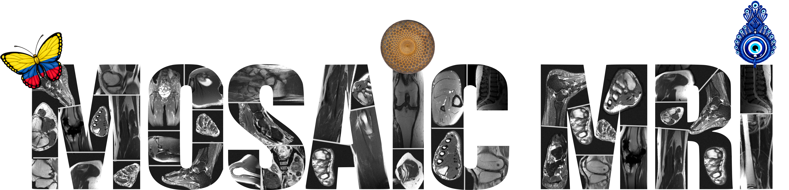
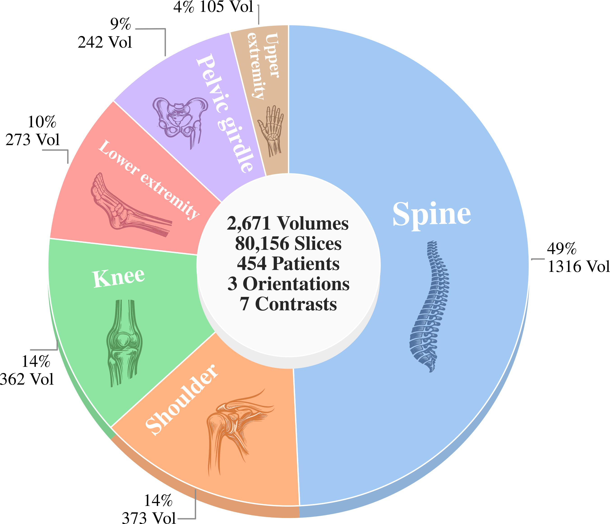
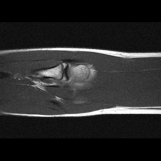
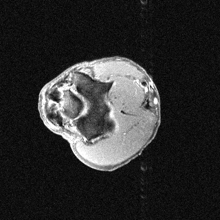
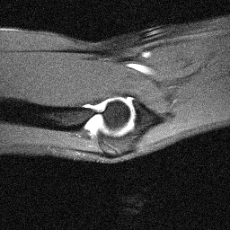

A large-scale dataset of fully-sampled raw musculoskeletal MRI designed to support accelerated reconstruction.
MosaicMRI is the largest open-source raw musculoskeletal MRI dataset to date, with 2,671 volumes and 80,156 slices. It was designed for machine-learning studies in accelerated reconstruction.

MosaicMRI extends open raw MRI benchmarks beyond brain and knee with diverse MSK anatomies and protocols.
Fully sampled multi-coil raw measurements support controlled accelerated reconstruction studies.
Baseline VarNet results enable scaling, mixed-anatomy training, and cross-anatomy generalization analyses.
Orientation-specific examples grouped by anatomy. Select a category to view axial, coronal, and sagittal samples.



MosaicMRI is designed for learning-based MRI under realistic clinical variability in anatomy, contrast, orientation, and coil configuration.
Data were collected on a 1.5T Siemens Magnetom Avantofit scanner between July 15, 2025 and September 23, 2025. We removed incomplete exams, localizers/planning scans, calibration-only acquisitions, and protocols not suited for slice-based reconstruction.
Remaining scans were visually quality-checked and stored as HDF5 with ISMRMRD-compatible headers and fastMRI-style internal layout.
AX/SAG/COR), coarse contrast, fat-suppression flag, and anatomical category.Splits are patient-disjoint to avoid leakage, with target ratios 70% train, 15% val, and 15% test. Assignment was optimized to balance slice counts while preserving per-anatomy coverage across splits.
| Split | Scans | Patients | Slices |
|---|---|---|---|
| train | 1,873 | 303 | 56,235 |
| val | 398 | 68 | 12,027 |
| test | 400 | 79 | 11,894 |
File organization and baseline usage for reconstruction experiments.
Directory layout (current release statistics):
MosaicMRI/
multicoil_train/ (1,744 files, 2,381.92 GiB)
*.h5
multicoil_val/ (398 files, 579.77 GiB)
*.h5
multicoil_test/ (64 files, 71.58 GiB)
*.h5
anatomy_transfer_challenge/
ankle/ (20 files, 49.40 GiB)
*.h5
contrast_generalization_challenge/
T1_FS/ (17 files, 20.74 GiB)
*.h5multicoil_train, multicoil_val, and multicoil_test are the standard reconstruction splits; multicoil_test contains both 4x and 8x accelerated test inputs.anatomy_transfer_challenge/ankle and contrast_generalization_challenge/T1_FS are challenge-specific evaluation subsets.ismrmrd_header, kspace, and reconstruction_rss.tStudyDescription and tProtocolName).A helper script in the GitHub repository reads these metadata fields and plots one reference slice.
Minimal steps to download a file, apply a mask, and run a baseline reconstruction.
git clone https://github.com/YOUR_REPO_LINK
cd YOUR_REPO
pip install -r requirements.txtpython demo_recon.py \
--file path/to/sample.h5 \
--mask random \
--acc 8 \
--out out.pngTo obtain access, please submit the request form below. We will contact you with instructions after review.
Evaluate cross-anatomy generalization for accelerated MRI reconstruction (8x). Train on released anatomies and submit results for hidden-ground-truth scoring.
Go to BenchmarkAccess is granted for research use after manual review.
MosaicMRI is released for non-commercial research and method development under the posted license terms.
Metadata is de-identified before release. Users may not attempt participant re-identification.
Please cite the dataset paper if you use MosaicMRI.
@article{mosaicmri_2026,
title = {MosaicMRI: A Diverse Dataset and Benchmark for Raw Musculoskeletal MRI},
author = {Arguello, Paula and Tinaz, Berk and Mohammad, Shahab Sepehri and Soltanolkotabi, Maryam and Soltanolkotabi, Mahdi},
journal = {arXiv},
year = {2026}
}Citation metadata will be updated if publication details change.
University of Utah
University of Southern California (USC)
University of California, Irvine (UCI)